请用微信扫码。
请用微信扫码。
A theory is the more impressive the greater the simplicity of its premises, the more different kinds of things it relates, and the more extended its area of applicability. Therefore the deep impression that classical thermodynamics made upon me. It is the only physical theory of universal content which I am convinced will never be overthrown, within the framework of applicability of its basic concepts.
考虑二维平面上的随机游走模型（醉汉行走问题）。每个粒子从坐标原点出发，以等概率向四个基本方向（上、下、左、右）随机运动。下图模拟了不同粒子数目（N = 10,\,100,\,1000）的随机游走过程，宏观上表现为粒子的扩散行为。在连续极限下，粒子数密度分布函数 \rho(x,t) 满足经典的扩散方程 \frac{\partial\rho}{\partial t}=D\frac{\partial^2\rho}{\partial x^2}。随着粒子数目 N 的增加，粒子的位移和均方位移的统计平均值均逐渐收敛于扩散方程的解（图中虚线所示），验证了微观随机过程与宏观扩散现象的联系。（python代码下载）
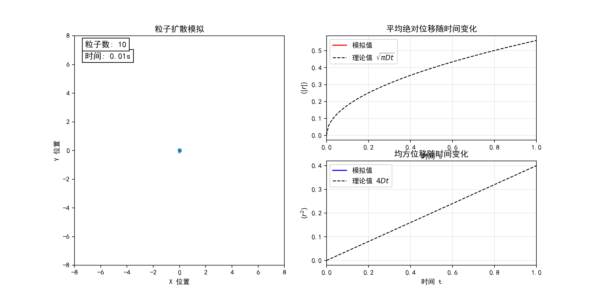
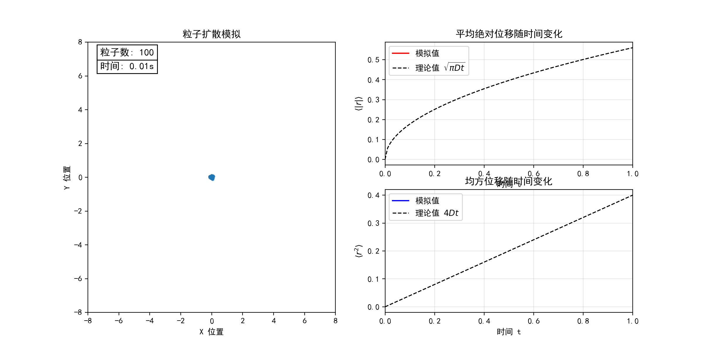
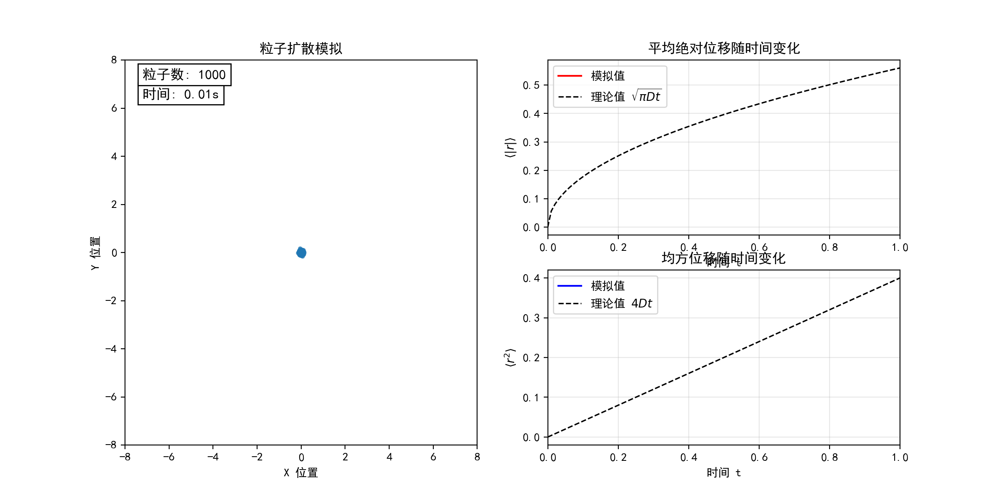
考虑一滴墨水在水中的扩散过程。初始时，墨汁颗粒聚集于容器左侧，因水分子撞击而做布朗运动。由于颗粒间存在体积排斥作用，它们的运动并非完全独立，而是相互制约的随机行走。为简化建模，考虑 N 个粒子（图中黑点）初始集中于边长为 L 的正方形区域左侧，每个粒子以等概率向四个方向随机移动（目标格点需未被其他粒子占据）。
从宏观角度来看，粒子将逐渐向右扩散，密度分布 \rho(x) 从初始的 \delta 函数渐演化均匀分布。若定义 t 时刻第 x 列的粒子数为 N_x(t)，则作为宏观可观测量的粒子密度分布为 \rho(x,t)=N_x(t)/L。系统对应的微观状态数为 \Omega(t)=\prod_{x=1}^{L}\frac{L!}{N_x(t)!\,[L-N_x(t)]!}，相应的Boltzmann熵为 S(t)=k_{\mathrm B}\ln\Omega(t)。
当 t\to\infty 时，粒子达到完全均匀分布，此时 N_x=N/L，可以根据上面公式计算出相应的状态数 \Omega_0 和熵 S_0，模拟结果展示了熵随时间单调增长的过程，并在 t\to\infty 时渐近趋近于虚线表示的平衡态熵值。
图中的模拟参数为 N=20 和 L=10。初始时刻状态数\Omega=1，熵为0；虚线对应平衡态状态数 \Omega_0=34050628916015625\approx3.4\times10^{16}，熵 S_0=k_{\mathrm B}\ln\Omega_0\approx38k_{\mathrm B}。（python代码下载）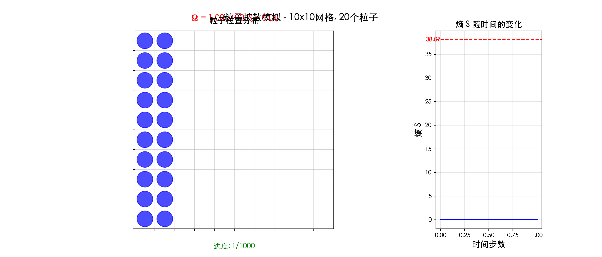
Gibbs 与 Maxwell、Boltzmann 同为统计力学的主要奠基者。他系统发展系综理论，以微观态的概率分布计算宏观物理量；其热力学研究建立了化学势、相平衡与相律的统一框架。他还与 Heaviside 独立发展现代向量分析。
他出生于美国 New Haven，父亲是耶鲁大学神学院的圣经文献学教授。1858 年毕业于耶鲁，1863 年以研究直齿轮轮齿形状的论文获得美国第一个工程学博士学位；随后留校任助教，先教拉丁语，再教自然哲学，1866–1869 年赴欧洲深造。
1871 年，他受聘为耶鲁数学物理学教授，任职一直持续到 1903 年去世。最初九年教职无薪，生活由家产支持；1880 年 Johns Hopkins 提出年薪 3000 美元的邀约后，耶鲁以年薪 2000 美元留住了他。这段时间他保持正式教授身份，并于 1873 年起发表重要的热力学论文。
任教与无薪经历见 AIP 生平资料；完整公式、故事与出处见 Gibbs 课后阅读。
据 Yale Alumni Magazine（2017）转述，Einstein 曾称 Gibbs 为“the greatest mind in American history”（美国历史上最伟大的头脑）。1892 年的通信中，Rayleigh 认为《论非均匀物质的平衡》过于凝练难读，Gibbs 觉得它“太长了”，并反省自己写作时没有充分顾及作者和读者的时间。英文摘录及原刊出处见下文的通信故事。
Gibbs 用固定物质量下的内能、体积与熵之间的关系描述热力学状态，Maxwell 将其做成石膏模型并赠给他，这件模型至今仍保存在耶鲁大学物理系。下方的曲面模型及图示描述了具有固、液、气相特征的理想化物质。
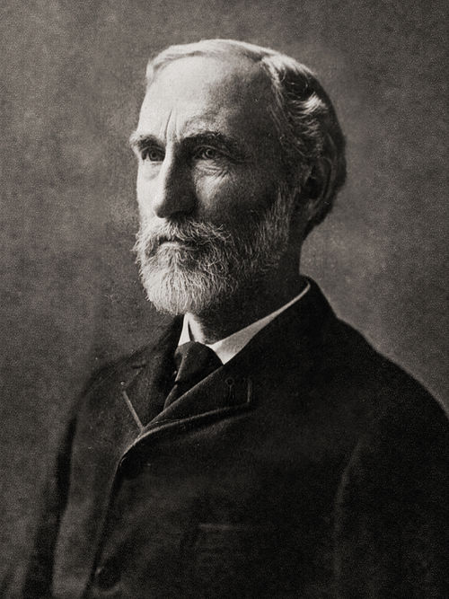
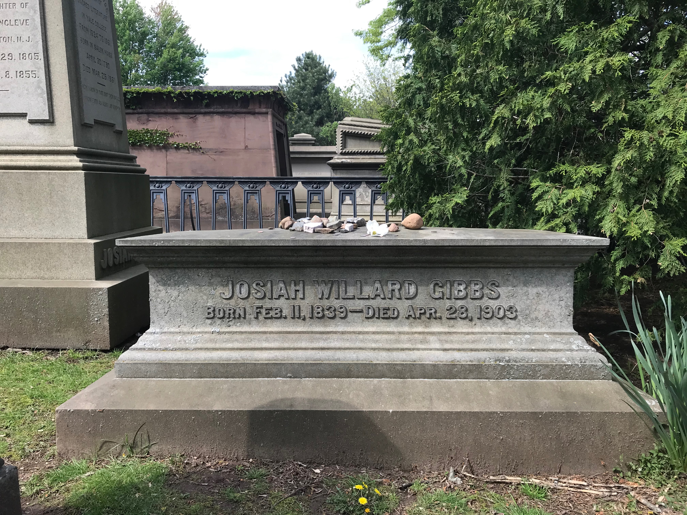
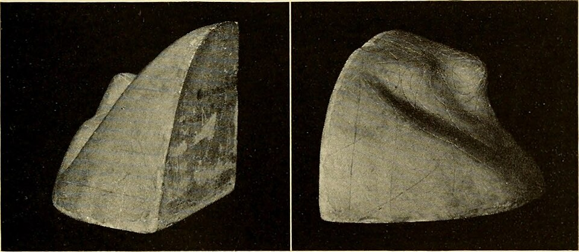
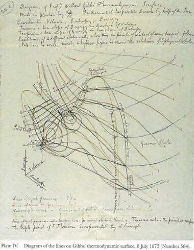
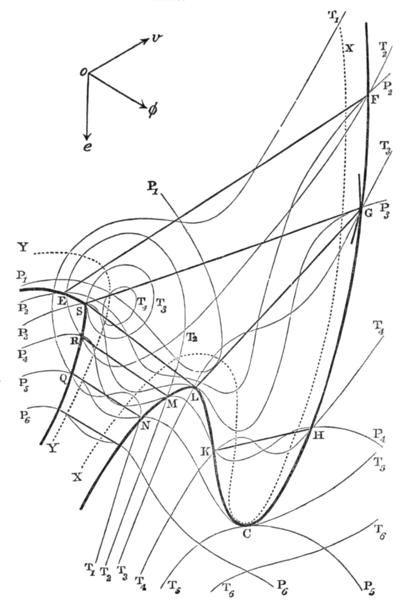
宇宙微波背景(CMB, Cosmic Microwave Background)是宇宙起源大爆炸理论的标志性证据。在大爆炸早期，宇宙充满了一层不透明的浓密、炽热的亚原子粒子等离子体迷雾。随着宇宙膨胀，这些等离子体冷却到约 3000\,\mathrm K，质子和电子结合形成以氢为主的中性原子，光子与物质解耦，宇宙变得透明，从而在宇宙中留下一个几乎均匀的背景辐射场。
CMB的能谱是迄今为止测量到的最完美的黑体谱，对应温度为(2.72548\pm0.00057)\,\mathrm K。（宇宙膨胀使得温度降低，否则夜空将会像太阳一样亮。）空间方向涨落约为 25000 分之一。
CMB 以 400 比 1 的比例，拥有宇宙中绝大多数的光子。CMB 中光子数密度是宇宙中物质数密度的十亿倍。
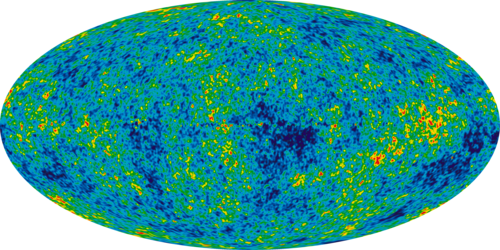
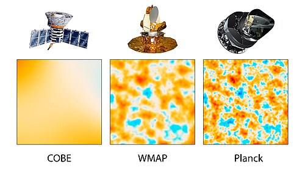
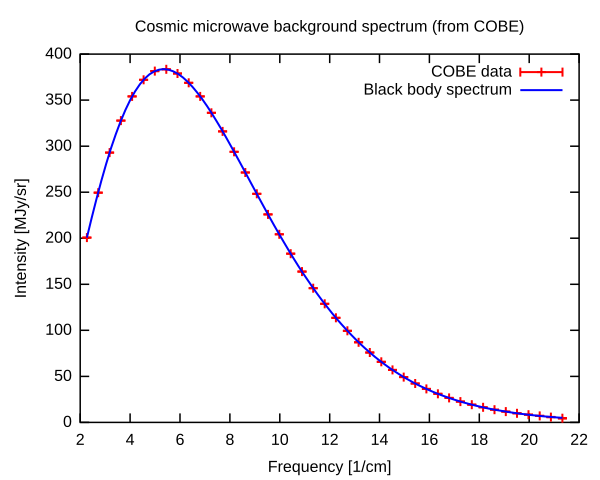
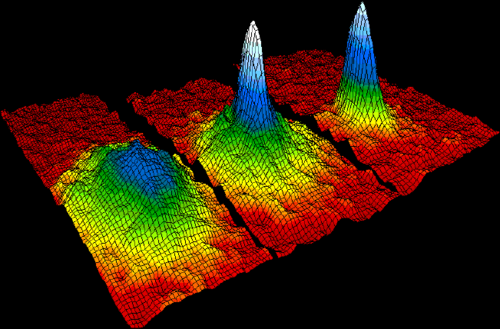
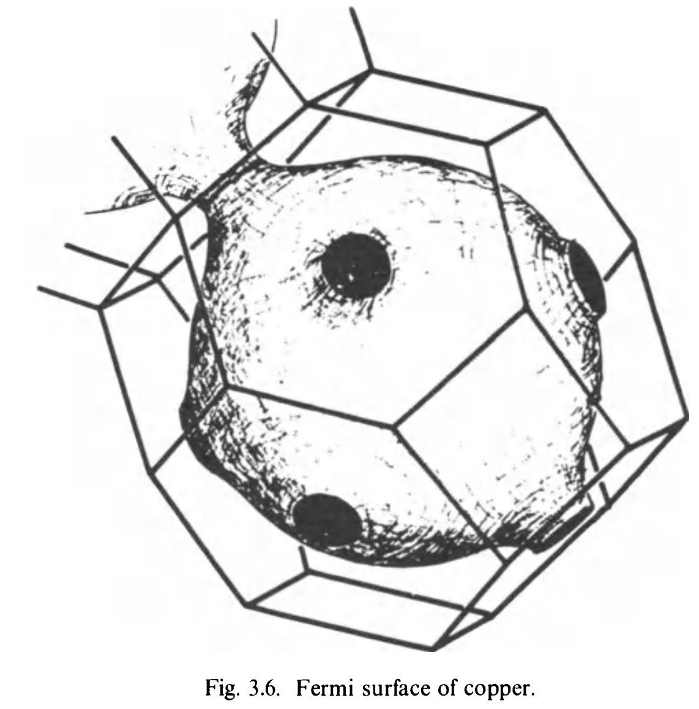
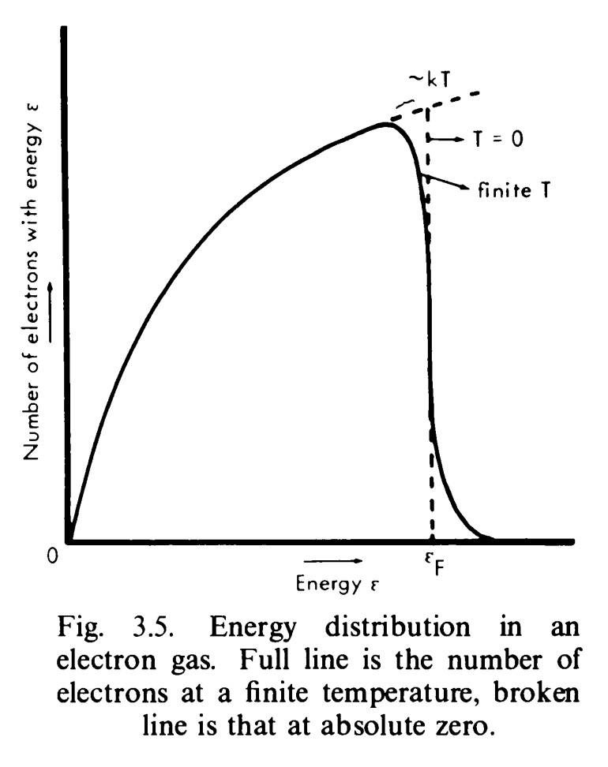
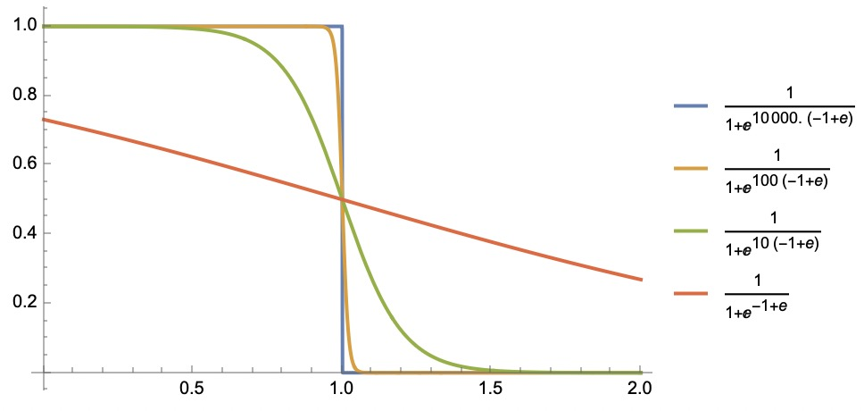
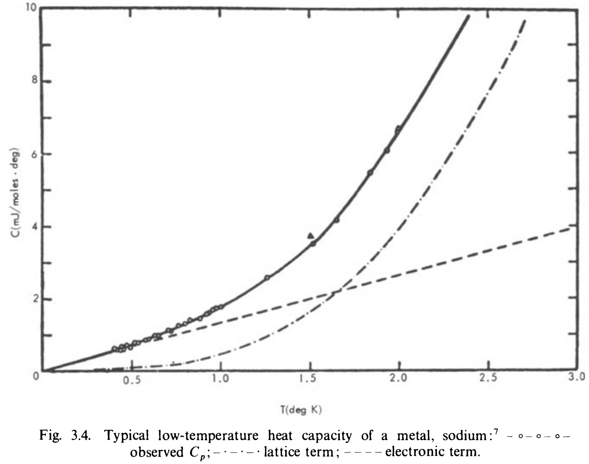
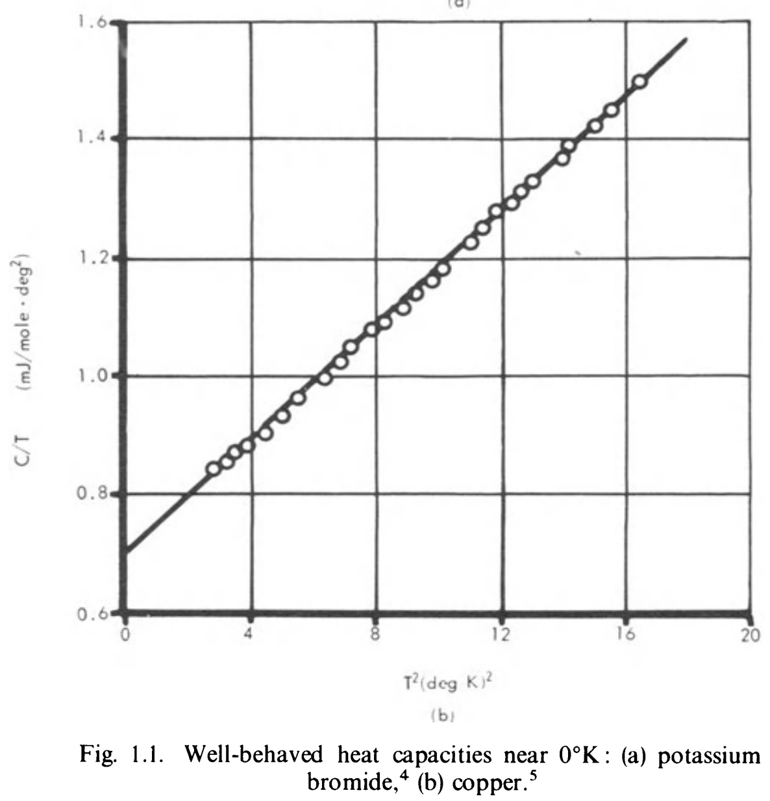
| 周次与日期 | 上课内容 | 人物与材料 |
|---|---|---|
| 第 1 周周一，9 月 14 日 | 统计力学导论 | |
| 第 1 周周三，9 月 16 日 | 微观态与统计平均；微正则系综与等概率假设；Boltzmann 熵与热力学第二定律 | Ludwig Eduard Boltzmann 课后阅读 / 全屏投影 |
| 第 2 周周一，9 月 21 日 | 温度、热容与热力学稳定性；二能级系统与负温度 | Rudolf Julius Emanuel Clausius 课后阅读 / 全屏投影 |
| 第 2 周周三，9 月 23 日 | 压强与热力学第一定律；正则系综、Boltzmann 分布、配分函数与能量涨落；二能级系统 | Josiah Willard Gibbs 课后阅读 / 全屏投影 |
| 第 3 周周一，9 月 28 日 | Gibbs 熵及其推广；自由能与 Legendre 变换；系综等价与最大熵原理 | John Joseph Hopfield Geoffrey Everest Hinton 课后阅读 / 全屏投影 |
| 第 3 周周三，9 月 30 日 | 化学势与粒子交换平衡；巨正则系综与粒子数涨落；巨热力学势与 Euler 关系 | Ryogo Kubo 课后阅读 / 全屏投影 |
| 第 4 周周一，10 月 5 日 | 国庆假期，停课 | |
| 第 4 周周三，10 月 7 日 | 国庆假期，停课 | |
| 第 5 周周一，10 月 12 日 | 经典气体、经典配分函数与态密度 | Elliott Hershel Lieb 课后阅读 / 全屏投影 |
| 第 5 周周三，10 月 14 日 | 理想气体、能均分定理与经典极限 | James Clerk Maxwell 课后阅读 / 全屏投影 |
| 第 6 周周一，10 月 19 日 | 巨正则理想气体；化学势、Gibbs 佯谬与混合熵 | Rodney James Baxter 课后阅读 / 全屏投影 |
| 第 6 周周三，10 月 21 日 | 分子运动论、Maxwell–Boltzmann 分布与双原子气体 | Nikolay Nikolayevich Bogoliubov 课后阅读 / 全屏投影 |
| 第 7 周周一，10 月 26 日 | 相互作用气体导论；Mayer 函数与维里展开 | Michael Ellis Fisher 课后阅读 / 全屏投影 |
| 第 7 周周三，10 月 28 日 | van der Waals 修正与真实气体状态方程 | Johannes Diderik van der Waals 课后阅读 / 全屏投影 |
| 第 8 周周一，11 月 2 日 | 簇展开、逸度与巨正则处理 | 杨振宁、李政道 课后阅读 / 全屏投影 |
| 第 8 周周三，11 月 4 日 | Debye 屏蔽；前半学期小结 | Peter Joseph William Debye 课后阅读 / 全屏投影 |
| 第 9 周周一，11 月 9 日 | 期中考试 | |
| 第 9 周周三，11 月 11 日 | 期中讲评；量子气体、态密度与求和变积分 | Wolfgang Ernst Friedrich Pauli 课后阅读 / 全屏投影 |
| 第 10 周周一，11 月 16 日 | 非相对论与相对论粒子的态密度 | Paul Adrien Maurice Dirac 课后阅读 / 全屏投影 |
| 第 10 周周三，11 月 18 日 | 光子气、黑体辐射与 Stefan–Boltzmann 定律 | Max Karl Ernst Ludwig Planck 课后阅读 / 全屏投影 |
| 第 11 周周一，11 月 23 日 | Debye 模型、声子与固体低温热容 | Albert Einstein 课后阅读 / 全屏投影 |
| 第 11 周周三，11 月 25 日 | 转动与振动自由度、冻结效应、双原子分子热容 | Paul Ehrenfest Tatyana Alexeyevna Afanasyeva-Ehrenfest 课后阅读 / 全屏投影 |
| 第 12 周周一，11 月 30 日 | 理想 Bose 气体、Bose–Einstein 分布与凝聚 | Satyendra Nath Bose 课后阅读 / 全屏投影 |
| 第 12 周周三，12 月 2 日 | Fermi–Dirac 分布与理想 Fermi 气体 | Enrico Fermi 课后阅读 / 全屏投影 |
| 第 13 周周一，12 月 7 日 | 低温 Fermi 气体、费米能、热容与简并压 | Lev Davidovich Landau 课后阅读 / 全屏投影 |
| 第 13 周周三，12 月 9 日 | 白矮星、Chandrasekhar 极限与 Pauli 顺磁性 | Philip Warren Anderson 课后阅读 / 全屏投影 |
| 第 14 周周一，12 月 14 日 | Landau 能级、轨道抗磁性与磁场中的电子 | Lars Onsager 课后阅读 / 全屏投影 |
| 第 14 周周三，12 月 16 日 | Carnot 循环、第二定律与热力学势 | Nicolas Léonard Sadi Carnot 课后阅读 / 全屏投影 |
| 第 15 周周一，12 月 21 日 | 相平衡、Clapeyron 关系与热力学应用 | Giorgio Parisi 课后阅读 / 全屏投影 |
| 第 15 周周三，12 月 23 日 | 相变、临界现象；Ising 模型与平均场理论 | Leo Philip Kadanoff 课后阅读 / 全屏投影 |
| 第 16 周周一，12 月 28 日 | Landau 理论、序参量、临界指数与普适性 | Kenneth Geddes Wilson 课后阅读 / 全屏投影 |
| 第 16 周周三，12 月 30 日 | 拓展专题、课程总结与期末复习 | Vadim Lvovich Berezinskii John Michael Kosterlitz David James Thouless 课后阅读 / 全屏投影 |
课程内容：微观态、宏观态与热平衡；微正则系综；微观状态数与熵
微观运动可以逆转，宏观热现象为什么有明确的方向？
Ludwig Eduard Boltzmann（1844 年 2 月 20 日—1906 年 9 月 5 日）是奥地利理论物理学家，统计力学的主要奠基者之一。他用原子和分子的统计规律解释宏观热现象，为热力学第二定律提供了统计解释。
他出生于维也纳，十岁以前在家接受教育，随后就读于上奥地利州林茨的高中。十五岁时，父亲去世。1863 年，他进入维也纳大学学习数学与物理，1866 年获博士学位，师从 Josef Stefan。
1869 年，年仅 25 岁的他成为格拉茨大学数学物理教授，后来还在维也纳、慕尼黑和莱比锡任教。他也讲授自然哲学，学生包括 Paul Ehrenfest 和 Lise Meitner。
Boltzmann 把宏观热现象与微观粒子运动联系起来：研究气体怎样趋于平衡、平衡时各微观态如何分配概率、热能怎样分布，并用微观态计数与概率解释熵和热力学第二定律。
同样的宏观状态，可以由许多不同的粒子位置和动量安排实现。1877 年，Boltzmann 通过计数这些实现方式，把热力学中的熵与微观状态联系起来。用现代记号写为：
这里，Ω 是在给定能量、体积和粒子数等约束下，与所选宏观状态相容的微观态数，kB 是 Boltzmann 常数。一个宏观状态的实现方式越多，熵就越大。采用对数还使两个相互独立体系的“态数相乘”对应于“熵相加”。
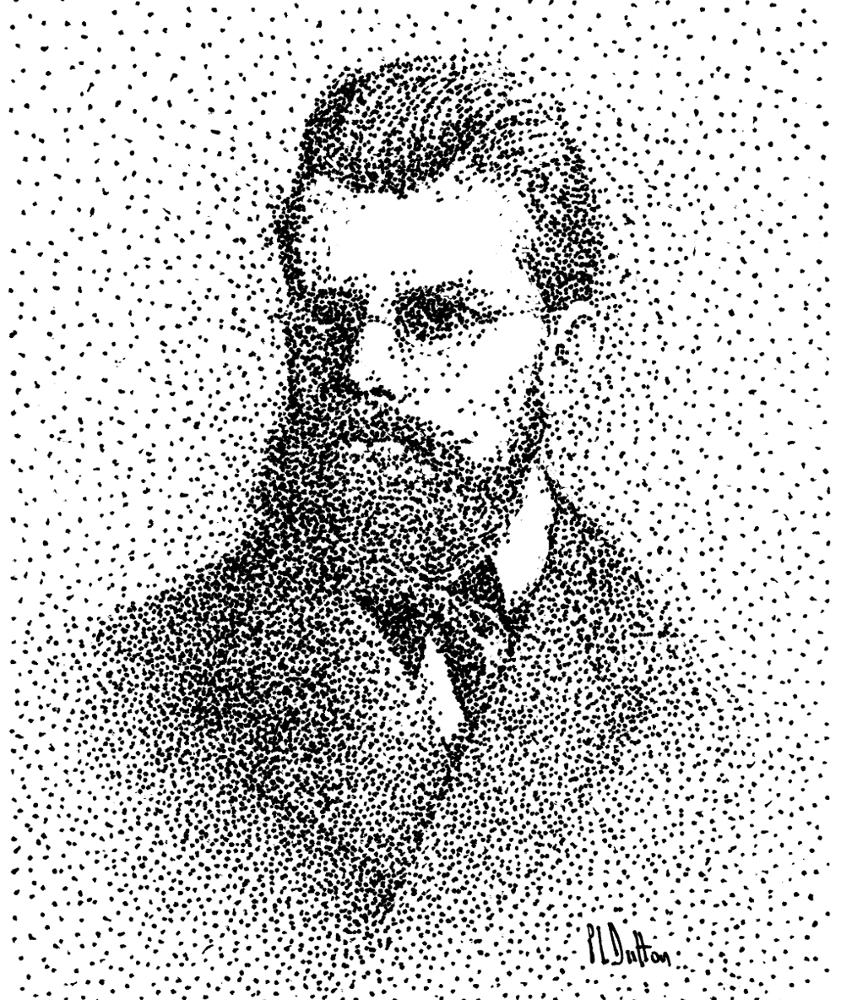
在微正则的等概率假设下，一个宏观状态包含的微观态越多，它出现的概率就越大。对宏观体系，平衡状态对应的微观态通常占压倒性多数，因此平衡具有统计上的典型性。
例如，盒中有 N 个位置近似独立、均匀分布的气体分子。在平衡时刻，它们全部位于指定半个盒子内的概率为 。
当 N 达到宏观数量时，这个概率小得难以想象。这说明气体扩散后很难自发重新聚集在一边：小幅涨落仍然存在，而如此显著的宏观熵减极难观察到。态数计数解释了不同宏观状态的概率；从低熵初态怎样趋于平衡，还需要结合动力学来说明。
在 Maxwell 气体动理论的基础上，他用分布函数统计不同位置、动量附近的分子数，并用 Boltzmann 方程描述自由运动和碰撞怎样改变这一分布。对于分子质量为 m、受到外力 F(r, t) 作用的经典稀薄气体，方程写为：
这里 f = f(r, p, t) 是单粒子分布函数，p = mv 是分子动量。∇ 对位置 r 求梯度，∂f/∂p 表示动量空间的梯度。左边三项依次表示分布随时间的变化、分子运动造成的空间输运、外力造成的动量变化；右边下标 coll 表示碰撞对分布变化率的贡献。
H 定理表明，在稀薄气体和“分子混沌”等假设下，孤立气体的相应统计熵不减，平衡时得到 Maxwell 速度分布。这为研究气体的弛豫和输运提供了动力学基础。
Boltzmann 发展了热平衡分布的统计描述。用现代正则系综的记号，一个与温度为 T 的热库弱耦合、粒子数和体积固定的体系，处于能量为 Ei 的微观态 i 的概率为：
这里 β = 1/(kBT)，Z 是配分函数，使所有微观态的概率之和等于 1。在正温度下，单个微观态的能量越高，概率权重越小；升温会减弱这种差别。这一分布把微观能量与宏观温度联系起来，也是计算内能、热容等热力学量的起点。
Boltzmann 在 Maxwell 等人的工作基础上发展了能量均分的理论。在经典热平衡中，每个以独立二次项出现在能量里的变量，平均贡献 kBT/2。例如，单原子理想气体有三个平动方向，因此：
这里 N 是粒子数，尖括号表示热平衡平均。由此可得定容热容 CV = 3NkB/2；对一维经典谐振子，动能和势能各含一个二次项，平均总能量则为 kBT。
他研究由许多遵循相同力学规律、却处于不同微观状态的体系组成的集合，提出了今天微正则系综和正则系综的先行形式，当时分别称为 ergode 和 holode。这些工作为后来 Gibbs 系统建立系综理论提供了重要基础。
他结合热力学与电磁理论中的辐射压，从理论上推出 Stefan 先前提出的四次方辐射定律。黑体单位面积向外辐射的总功率为：
其中 P 是黑体向外辐射的总功率，A 是辐射表面积，σ 是 Stefan–Boltzmann 常数，T 是绝对温度。温度升高到两倍，单位面积的辐射功率就增至 16 倍；这一结果把热力学与电磁辐射联系起来。
十九世纪末，原子模型已被用于解释物质性质，但它应当具有怎样的物理地位，仍存在争论。Ernst Mach 强调从经验出发，对把原子假说当作已经确证的实在持保留态度；Wilhelm Ostwald 的能量论则希望以能量及其转化为基础，避免把热现象还原为微观机械运动。
Boltzmann 主张保留原子模型，并以模型解释现象、产生预言的能力来检验它。1895 年的吕贝克会议上，他与 Ostwald 围绕能量论发生激烈争论，Felix Klein 等人支持 Boltzmann。他与 Mach 的关系紧张，却与 Ostwald 保持私人友谊；学术分歧与私人关系并不总是一致。
1905 年，Boltzmann 受邀赴加州大学伯克利分校讲授暑期课程，并在《一位德国教授的黄金国之旅》（Reise eines deutschen Professors ins Eldorado）中记录这段经历。离开学术争论，他的游记展现了一位会怯场、爱美食，也乐于拿自己开玩笑的教授。
启程前，他在维也纳西北火车站的餐厅吃了烤猪肉、卷心菜和土豆，喝了几杯啤酒，随后在游记中打趣：
“My memory for figures, otherwise tolerably accurate, always lets me down when I am counting beer glasses.”
“我对数字的记忆平时还算可靠，可一数自己喝了几杯啤酒，就总是不灵。”
起初他为用英语讲课而紧张，但第二讲便逐渐放松；听说学生觉得他讲得清楚，他更有信心了。说起练习过的 blackboard 和 chalk，他还颇为得意。
英语老师教过的 lobster 则带来一个实际的收获：他终于能在餐馆点到龙虾沙拉。
当时 Berkeley 校园周围禁止售酒。Boltzmann 打听酒铺时，同事先四下张望、确认他可靠，才透露 Oakland 的店名。他写道：
“I managed to smuggle in a whole battery of wine bottles and from then on the road to Oakland became very familiar.”
“我设法‘走私’进来一整排酒瓶，从此，去 Oakland 的路就变得十分熟悉了。”
酒买回来了，他却仍得饭后偷偷喝，几乎觉得自己染上了恶习。他讽刺道：禁酒风气又给世间增添了一种虚伪。
同一篇加州游记里，Boltzmann 还讲了一次被“催稿”的经历。数学家 Felix Klein 请他为《数学科学百科全书》撰稿，他推辞了很久。Klein 最后写信告诉他：如果你不写，我就把这项任务交给 Ernst Zermelo。
1896 年，Zermelo 利用 Poincaré 回归定理质疑第二定律的机械推导：在满足回归条件的体系中，几乎所有初态对应的运动都会重新接近初态，因而不能断言熵永远严格增加。Boltzmann 则强调第二定律的统计意义，以及宏观气体回归时间的漫长。
Boltzmann 不愿让对方的观点成为百科全书中的通行说法，立即回信接下了任务。原本计划旅行归来后在乡下休息的九月，就这样变成了带着一批维也纳物理学家查文献、赶文章的日子。
另一位参与撰稿的教授 Wirtinger 似乎也有同感，索性把这部百科全书的标志画成一个捕鼠夹：教授被诱饵吸引，就被夹住了。Boltzmann 一边自嘲，一边也赞赏 Klein 和同事们把数学知识整理成可用文献的理想与投入。
1906 年 5 月，健康状况的恶化使 Boltzmann 无法继续授课；院长在致主管部门的信中称其患有“严重的神经衰弱”。
1906 年 9 月 5 日，他与妻子、女儿在的里雅斯特附近的杜伊诺度假期间自杀身亡，终年 62 岁。他生前已受到学界广泛尊重，不能把这场悲剧简单归因于学术争论或“原子论无人相信”。他后来安葬于维也纳中央公墓，墓碑上刻着熵公式 S = k log W。
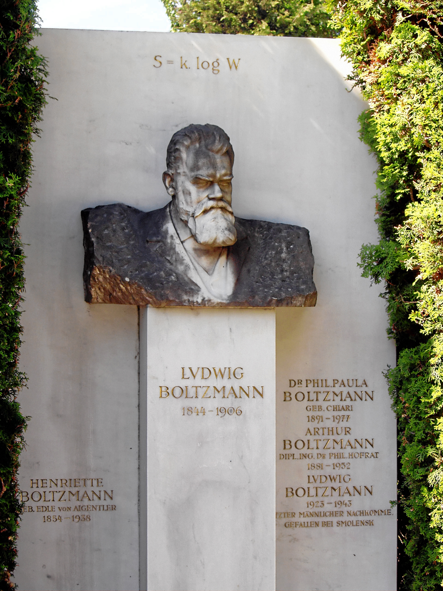
在 Boltzmann 生前，Albert Einstein 已于 1905 年从分子热运动出发，建立了布朗运动的定量理论。他给出悬浮微粒位移的统计规律，把显微镜下可见的运动与分子尺度联系起来，使原子论有了可供实验检验的定量预言。
1908–1909 年，Jean Perrin 通过悬浮微粒的高度分布和布朗运动等测量，验证了相关理论，并得到相互一致的 Avogadro 常数，为原子和分子的存在提供了有力的定量证据，推动了原子论的广泛接受。他因这些研究获得 1926 年诺贝尔物理学奖。
课程内容：温度；微正则系综续；热容、稳定性与熵
能量守恒，为什么热却总是自发地从高温流向低温？
Rudolf Clausius（1822 年 1 月 2 日—1888 年 8 月 24 日）是德国理论物理学家，热力学的主要奠基者之一，也是气体动理论的重要开拓者。他建立了热力学第二定律的重要表述，并在 1865 年为状态量 S 创造了“熵”（entropy）这个名称。
他出生于当时普鲁士的 Köslin（今波兰 Koszalin）。1840 年进入柏林大学时，他曾对历史很感兴趣，后来选择数学与物理。1848 年，他凭借关于大气光学的论文获得哈雷大学博士学位。
类似的跨学科转向也见于威滕（Edward Witten）：他本科主修历史，曾在 1972 年担任民主党总统候选人乔治·麦戈文（George McGovern）的竞选助理；麦戈文最终输给了共和党候选人理查德·尼克松。威滕后来转向理论物理，并在数学物理中作出重要贡献。
1850 年，他发表研究热与机械功之间关系的奠基性论文，并在柏林任教。1855–1867 年在苏黎世联邦理工学院任教授，兼任苏黎世大学教授。此后他先后在维尔茨堡和波恩任教，1869 年到波恩后一直工作至去世。
Clausius 的三项工作分别回答三个问题：热过程有什么方向性，快速运动的分子为什么只会缓慢扩散，以及微观作用力怎样决定宏观压力。以下用现代记号介绍这些思想。
Clausius 对第二定律的表述是：不可能使一个过程的唯一结果成为把热从低温物体传到高温物体。冰箱能够把热从冷处搬到热处，是因为它还消耗了功。Clausius 在研究这类过程时引入状态量 S，并在 1865 年将它命名为熵。对于可逆过程中的微小变化：
这里 T 是绝对温度，đQrev 是体系在可逆过程中吸收的微小热量。热量依赖过程，而熵是状态函数：两个平衡态之间的熵差，可以沿连接它们的可逆路径计算。对于一个完整循环，第二定律给出 Clausius 不等式：
热量以流入体系为正，T 是与体系交换这份热量的热库温度。可逆循环取等号；计入传热在内的不可逆性时，循环积分小于零。对孤立体系，第二定律表述为 ΔS ≥ 0。
Clausius 建立了熵的宏观概念与变化规律。后来，Boltzmann 等人进一步追问：这些规律怎样从大量粒子的运动和概率中产生？这正是热力学通向统计力学的关键问题。
在 Joule 等人关于热与功转化的实验基础上，Clausius 将吸热、内能变化与对外做功写进统一的关系，成为现代热力学的重要起点。对不交换物质、整体动能与外场势能不变的封闭体系，用现代记号写为：
U 是内能；đQ 以体系吸热为正，đW 以外界对体系做功为正。内能是状态函数，热和功则描述能量传递的不同方式，依赖具体过程。这并不意味着能量守恒由 Clausius 一人发现；他的贡献在于热力学理论的清晰表述与系统建立。
Clausius 在 Clapeyron 的先行工作基础上，用新的热力学框架处理相变。对纯物质的一阶相变，两相共存曲线的斜率满足：
pcoex 是两相共存时的压强，L 是从第一相转到第二相的摩尔潜热，Δv 是对应的摩尔体积变化，两者取相同的相变方向。对液–气相变，共存压强就是饱和蒸气压 psat。若蒸气近似为理想气体、液体摩尔体积可以忽略：
其中 R 为摩尔气体常数，L 为摩尔汽化潜热。这说明饱和蒸气压怎样随温度变化，也把沸点、潜热与相共存联系起来。
1857 年，Clausius 将分子的平动与内部运动纳入气体动理论，认识到单靠平动能不足以解释气体的全部热能。他给出的分子运动速度很高，荷兰科学家 Christophorus Buys Ballot 随即提出一个尖锐问题：如果分子运动如此迅速，为什么实际观察到的气体混合与扩散却慢得多？
Clausius 在 1858 年的回应抓住了碰撞：分子走过的总路程，并不等于它离出发点的距离。一次次碰撞改变前进方向，长路程可以只对应很小的净位移。他引入平均自由程，描述相邻两次碰撞之间平均走过的距离，使“微观运动快、宏观扩散慢”成为能够定量研究的问题。
这是现代稀薄、热平衡的同种硬球气体模型中的结果，采用碰撞前速度近似不相关的假设。n = N/V 为粒子数密度，d 为球的直径，σ 为碰撞截面。密度或碰撞截面越大，平均自由程越短。
用现代随机游走的语言说，在没有宏观流动的情况下，分子多次碰撞后的典型位移只随时间的平方根增长。在三维正常扩散区间，位移的均方值满足 ⟨|r(t) − r(0)|²⟩ ≃ 6Dt，扩散系数的量级为 D ∼ v̄λ，其中 v̄ 是平均速率。要扩散到给定距离，碰撞越频繁，通常需要的时间就越长。
铜导线中的电子提供了另一个“运动很快、定向漂移很慢”的例子。室温下，在自由电子近似中，铜的费米速率约为 vF ≃ 1.6 × 10⁶ m/s，所有导电电子的平均速率约为 ⟨|v|⟩ ≃ 3vF/4 ≃ 1.2 × 10⁶ m/s。这个速率主要由费米统计决定。平衡时各方向的速度相互抵消，平均速度为零；电流对应的是电场引起的微小定向漂移。
例如，在截面积 A = 1 mm²、电流 I = 1 A 的铜导线中，取导电电子数密度 n ≃ 8.5 × 10²⁸ m⁻³，则漂移速率为 vd = I/(neA) ≃ 7.3 × 10⁻⁵ m/s，即每秒约 0.073 mm，其中 e 为元电荷。两种速率相差约十个数量级。平均速率衡量电子运动有多快，漂移速率衡量它们整体朝一个方向移动有多快。
平均自由程把分子碰撞与宏观输运联系起来，成为研究扩散、黏滞和热传导的重要尺度。Maxwell 与 Boltzmann 随后进一步发展了速度分布、碰撞与输运理论。
“维里”音译自 virial，源于拉丁语 vis，意为“力”。Clausius 于 1870 年把与力有关的长期平均量 称为体系的“维里”。
维里定理的关键来自牛顿方程。记粒子动量为 pᵢ = mᵢvᵢ，对位置与动量的内积求时间导数：
若粒子的位置与动量保持有界，且长期平均存在，左边的长期时间平均趋于零，于是得到：
K 是总动能，ri 是第 i 个粒子的位置，Fi 是它受到的总力；尖括号表示长期时间平均。对于容器内的气体，总力必须包含容器壁的作用。
对三维经典粒子体系，若内部相互作用由只依赖粒子间距离的两体势给出，且除容器壁外没有外场作用，把壁面压力与粒子间作用分开，并在热平衡下使用能量均分定理，可得到：
这里 rij = ri − rj，Fij 是粒子 j 对粒子 i 的作用力。此式中的尖括号表示平衡系综平均；在时间平均可由系综平均替代时，也可理解为长期时间平均。忽略粒子间相互作用时恢复理想气体状态方程；保留它们，就能把真实气体的压力修正与微观作用联系起来。维里定理与后来的维里展开相关，但并不是同一个结果。
因此，不必逐一求解所有粒子的轨迹，也能建立平均动能、作用力与宏观压力之间的关系。
Carnot 在 1824 年研究热机时，沿用了热质说：做功时，热从高温流向低温，热的总量保持不变。Joule 的实验则支持热与机械功可以相互转化。Clausius 因而需要重新回答：热机输出的功从哪里来，Carnot 关于理想热机的结论还能否成立？
Clausius 在 1850 年指出，热机每完成一个循环，内能回到初始值；从高温热库吸收的热量，一部分转化为输出功，其余排给低温热库。保留可逆热机的思想，并用第二定律限制过程的方向，可以重新得到 Carnot 的结论：在相同的两个热库之间工作，可逆热机的效率最高。
这里 QH > 0 是从高温热库吸收的热量，QC > 0 是向低温热库放出的热量；Wout 以热机对外输出功为正。T_{\mathrm H} 与 T_{\mathrm C} 是两个热库的绝对温度，满足 T_{\mathrm H}>T_{\mathrm C}>0。可逆热机取效率上限。
第一定律说明热量与功怎样满足能量守恒，第二定律说明能量转化受哪些方向和效率限制。这是两个不同、但彼此相容的规律。
Clausius 对热转化与过程方向的研究先于“熵”这个名称。1865 年，他正式把状态量 S 命名为 entropy。词根来自希腊语 τροπή（tropē，意为“转变”）；他有意让新词与 energy 相似，以呼应这两个物理量之间的联系。
“I have intentionally formed the word entropy so as to be as similar as possible to the word energy”
“我有意把 entropy 这个词造得尽可能与 energy 相似。”
——Clausius，1865 年论文；英译节选见 William F. Magie 编 A Source Book in Physics（1935）。
同一段文字还说明，采用古典语言的词根，是希望这个名称能在不同现代语言中通用。这个命名既考虑物理含义，也考虑科学交流；理解熵本身，则需要回到它的定义与第二定律。
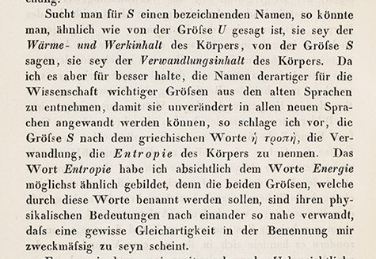
中文的“熵”（shāng）由物理学家胡刚复创译，通常追溯到 1923 年。当时，他为来南京讲学的热工学家 Rudolf Plank 翻译；1923 年第 5 期《科学》刊载了原文及他的译文《热力学第二定律及熵之观念》。
“熵”是一个形声字：左边的“火”是形旁，表示它属于热学范畴；右边的“商”是声旁，提示读音 shāng，同时也呼应除法之商的意思。造字的启发来自可逆过程中“微小吸热量除以绝对温度”的关系。
1870 年普法战争爆发时，48 岁的 Clausius 组织了由波恩学生组成的救护队。在 Vionville 和 Gravelotte 一带，他参与搬运和救助伤员，自己腿部受伤，此后长期受疼痛和行动不便困扰。
1875 年，妻子去世，他承担起照料孩子的责任。英国皇家学会悼文收录的兄弟 Robert 的回忆提到，他会辅导孩子的功课，也投入他们的日常生活。抽象的理论工作与这些具体责任，共同构成了他的生活。
腿伤让 Clausius 多年行走不便，医生建议他尝试骑马。于是，1878 年，已经 56 岁的他开始学习这项新技能。英国皇家学会悼文收录的兄弟 Robert 的回忆说，他后来成了一位出色的骑手，骑马也明显改善了他的健康。
从为缓解腿伤而尝试，到练成一项新本领，这段经历让讲台之外的 Clausius 也有了清晰的轮廓。
熵的概念不断扩展：从热过程的方向和微观状态的统计，到信息的不确定性、量子纠缠与时空几何。以下十个节点采用现代记号，年份对应代表性论文。阅读时可以关注同一个问题：每一种熵究竟在描述什么？
Clausius 建立了熵与可逆热交换的关系；Boltzmann 则为熵寻找微观解释：同一个宏观状态可以由多少种粒子排列和运动方式实现？1877 年，他把这些实现方式的数目与熵联系起来。用现代记号写为：
\Omega 是与所指定宏观状态相容的微观态数；约束可包括能量、体积、粒子数及粗粒化的密度分布等。kB 是 Boltzmann 常数。实现方式越多，熵越大；对于相互独立的体系，微观态数相乘，取对数后恰好对应熵相加。在微正则的等概率假设下，微观态数越多的宏观状态越容易出现；对通常的宏观体系，热平衡对应的微观态占压倒性多数。
当体系与热库交换能量时，各微观态的概率通常并不相等。Gibbs 在 1902 年的著作中系统建立系综方法，把熵与整个微观态分布联系起来。原著主要使用经典相空间中的连续分布；用现代离散记号表示，相应的 Gibbs 熵为：
pi 是第 i 个微观态的概率，所有概率之和为 1，并约定 0 ln 0 = 0。当 \Omega 个微观态等概率，即 pi = 1/Ω 时，这个公式回到 S = kB ln Ω。它因此能在同一框架下处理微正则系综的等概率分布和正则系综等非等概率分布。
这里的熵属于所选概率分布。对于孤立经典体系，精确 Hamilton 演化保持细粒化 Gibbs 熵不变；讨论宏观熵增时，还需要说明粗粒化或所保留的宏观信息。
量子体系的统计状态由密度矩阵 ρ̂ 描述，它同时容纳纯态和混合态。1927 年，von Neumann 在量子统计的框架下建立相应的熵表达式。用现代记号写为：
Tr 表示取迹，密度矩阵满足 Tr ρ̂ = 1。若其本征值为 pi，上述公式就是 −kB∑pi ln pi，且不依赖所选基底。纯态只有一个非零本征值 1，因此熵为零；混合态的熵大于零。
量子理论还带来一种新的可能：整体处于纯态时，一部分的约化态仍然可以是混合态。将这个公式用于约化密度矩阵，就为后面介绍的纠缠熵提供了基础。
通信中的问题是：在收到一个符号之前，它的取值有多大不确定性？1948 年，Shannon 用下面的量描述离散信源：
这里 pi 是符号出现的概率，以 2 为对数底，单位为比特。等概率的两个选项对应 1 比特；完全确定的结果对应 0 比特。对独立同分布的符号序列，H 给出无损压缩时每个符号所需平均比特数的渐近下限。符号之间存在关联时，需要考察序列的熵及熵率。
这一进展使熵成为通信与数据压缩的定量工具。它衡量概率上的不确定性，不评价消息的意义或价值。对同一组物理微观态概率，Gibbs 熵与信息熵满足 S = kB ln 2 · H；任意数据的信息熵则未必对应一个体系的热力学熵。
前面的公式由概率分布计算熵；Jaynes 将问题反过来：只知道一些平均量时，应当采用什么分布？1957 年，他把最大熵原则系统用于统计力学。以已知平均能量 U 为例，允许的概率分布必须满足：
在给定微观态及其计数方式后，从这些分布中选取 Gibbs 熵最大的一个。用拉格朗日乘子处理上述两个约束，就得到正则分布：
Ei 是微观态的能量，Z = ∑i exp(−βEi) 保证概率归一化。参数 β 由平均能量约束确定；与热力学温度对应后，β = 1/(kBT)。
这一方法将系综构造表述为受已知信息约束的推断过程，使熵既能描述分布，也能帮助选择分布。体系达到平衡的实际机制和所需时间，则属于另一个动力学问题。
单一的 Shannon 熵不能完全刻画一个概率分布。1961 年，Alfréd Rényi 引入参数，构造一族对概率大小有不同敏感程度的熵：
其中 α > 0，α ≠ 1。较大的 α 更突出大概率事件；0 < α < 1 时，小概率事件的影响相对增强。当 α → 1 时，恢复 H = −∑i pi ln pi，即以自然对数定义的 Shannon 熵。这里的单位为 nat；改用以 2 为底的对数，单位就是比特。
例如二阶 Rényi 熵 H2 = −ln ∑i pi2，由两次独立抽样得到相同结果的概率决定。把各概率替换为密度矩阵的本征值，就得到量子 Rényi 熵；其中 S2 = −ln Tr ρ̂² 与量子态的纯度 Tr ρ̂² 直接相连（取 k_B = 1）。因此，这一族熵也成为研究量子态与纠缠的工具。
把有熵的物体投入黑洞后，如果只看外部，熵似乎减少了。Bekenstein 在 1973 年系统提出，应把黑洞自身的熵也计入，并主张它正比于事件视界面积。Hawking 在 1974 年发现黑洞会发出具有热谱的量子辐射，1975 年发表完整计算。由此确定的温度，使面积熵的比例系数也得到确定。在 Einstein 引力的半经典近似下：
A 是事件视界面积，G 是引力常数，c 是光速，ℏ 是约化 Planck 常数，\ell_{\mathrm P} 是普朗克长度。这个公式把热力学、量子理论与引力联系在一起：黑洞的熵由视界面积决定。
广义第二定律要求考察黑洞熵与外部物质、辐射熵之和。黑洞蒸发时，视界面积可以减小，外部辐射的熵也必须同时计入。这一发现使“黑洞的熵由哪些微观自由度承载”成为量子引力中的核心问题。
von Neumann 熵的一个重要应用，是研究量子体系不同部分之间的纠缠。设整体 AB 处于纯态，将 B 的自由度取迹后，得到 A 的约化密度矩阵。取 k_B = 1，定义：
对于二分纯态，S_A = S_B；当两部分没有纠缠时，SA = SB = 0。例如，两个量子比特组成的 Bell 态满足：
此时 ρ̂A = ρ̂B = Î2/2，其中 Î2 是二维单位矩阵。整体的量子态完全确定，但任一量子比特的约化态都是最大混合态。这种局部混合性来自两部分的纠缠；若整体本来就是混合态，子系统熵还包含其他混合贡献，便不能单独用来度量纠缠。
这一概念与黑洞问题很早就发生联系。1986 年，Luca Bombelli、Rabinder K. Koul、Joohan Lee 和 Rafael D. Sorkin 研究了将不可观测自由度取迹产生的熵及其黑洞解释。1993 年，Mark Srednicki 对三维空间中无质量自由标量场的基态计算发现：固定短距离截断后，大球形区域的纠缠熵领先项随边界面积增长。这提供了面积律的重要实例。
1996 年，Charles H. Bennett、Herbert J. Bernstein、Sandu Popescu 和 Benjamin Schumacher 进一步赋予纠缠熵操作意义：对许多份相同且独立制备的二分纯态，仅用局域操作与经典通信，每份态可渐近提取 SA/ln 2 对标准 Bell 纠缠对。于是，熵还能衡量可用于量子信息任务的纠缠资源。这些年份标记的是重要进展，并非纠缠熵的首次定义。
纠缠熵的领先项常由局部边界附近的关联决定，其中是否还藏着更整体的信息？2006 年发表的两组独立工作——Alexei Kitaev 与 John Preskill、Michael Levin 与 Xiao-Gang Wen——提出了拓扑纠缠熵。对于平面上二维有能隙拓扑相的基态，在没有任意子激发时，取边界光滑、尺度远大于关联长度的圆盘状区域 A，有（k_B = 1）：
L 是边界长度；面积律系数 α 依赖微观细节，o(1) 是随区域增大而趋于零的修正。拓扑常数项 −γ 则与任意子类型 a 的量子维数 d_a 有关，𝒟 称为总量子维数。
为了从局部边界贡献中提取这项常数，Kitaev–Preskill 选择三个相邻的大区域及其并集，使如下组合中的局部边界项相消：
这里 AB = A∪B，其余下标同理；箭头表示区域尺寸远大于关联长度的极限。三个区域及其并集须按论文的构型选取，使局部边界贡献相消。Levin–Wen 使用另一种区域组合提取同类拓扑信息。
例如，toric code 有四种任意子类型，均满足 da = 1，所以 𝒟 = √4 = 2，γ = ln 2。这使我们能仅从基态的纠缠结构中提取拓扑序的信息。不同拓扑序也可能具有相同的 γ，因此它是重要的特征量，而不是完整的分类标签。
黑洞熵与面积有关，量子场的纠缠熵也常有面积律；两者能否建立定量联系？2006 年，Shinsei Ryu 与 Tadashi Takayanagi 在 AdS/CFT 对应中提出了这样的关系。这里，一类边界量子场论与多一维空间中的引力理论相对应。对于具有经典 Einstein 引力对偶的静态情形，取 k_B = ℏ = c = 1，在经典引力领先阶：
ρ̂_A 是边界量子体系中区域 A 的约化密度矩阵，G_N 是引力理论的牛顿常数。γ_A 位于固定时刻的引力空间切片上，以 ∂A 为边界，并与 A 共同围成一个体区域；这就是同调条件。在所有满足这些条件的候选曲面中，取面积最小者。比较场论的熵与曲面面积时，两侧采用相匹配的短距离截断。
式中的近似号提醒我们，面积项是经典引力的领先贡献；超出这一近似还需量子修正。这条关系把量子体系的熵计算转化为引力空间中的几何问题，使熵成为联系量子信息与时空结构的定量工具。整体为纯态时，它计算区域与其余部分的纠缠熵；整体为混合态时，它计算区域的 von Neumann 熵，其中也包含混合的贡献。
课程内容：正则系综；热库、Boltzmann 因子与配分函数
不知道每个分子的轨迹，怎样计算整个体系的热力学性质？
Josiah Willard Gibbs（1839 年 2 月 11 日—1903 年 4 月 28 日）是美国理论物理学家、物理化学家，与 Maxwell、Boltzmann 并列为统计力学的主要奠基者。“统计力学”（statistical mechanics）这一名称也由他提出。他把系综方法发展成系统的理论：用一组可能的微观状态及其概率，计算宏观物理量，并建立与热力学的联系。
他出生于美国康涅狄格州 New Haven，父亲 Josiah Willard Gibbs Sr. 是耶鲁大学神学院的圣经文献学教授。1858 年本科毕业后，他继续在耶鲁研究工程问题；1863 年以齿轮轮齿形状的研究获得博士学位，这是美国授予的第五个博士学位，也是第一个工程学博士学位。
留校任助教时，他前两年教拉丁语，第三年教自然哲学。1866–1869 年，他先后在巴黎、柏林和海德堡学习数学与物理。
1871 年，Gibbs 成为耶鲁大学数学物理学教授，一直任职到 1903 年去世。1873 年，他发表热力学图示与曲面研究；1876、1878 年分两部分发表《论非均匀物质的平衡》，建立广泛适用于物理和化学的平衡理论。1902 年，《统计力学基本原理》出版，系统呈现了他关于系综、概率分布与热力学基础的研究。
Gibbs 为化学平衡建立统一的热力学描述，又用系综方法奠定统计力学的系统基础。化学势、相律、概率与粒子计数从不同层次回答平衡怎样确定；向量分析则提供了广泛使用的计算语言。下面的公式采用现代记号。
在《论非均匀物质的平衡》中，Gibbs 将物质组成的变化纳入热力学。对只考虑体积功、忽略界面等额外贡献的多组分简单体系，基本关系写为：
其中 N_a 是第 a 种组分的粒子数。化学势 \mu_a 描述增加该组分时，内能对粒子数的变化率：
求偏导时保持熵、体积和其他组分的粒子数不变。对于各组分总量固定的相平衡问题，在恒温恒压下，稳定平衡使 Gibbs 自由能最小；能够在两相间交换的组分，其化学势在平衡时相等：
这里上标 \alpha,\beta 标记两个相。忽略界面与外场等额外效应时，两相平衡还要求温度和压强相同。化学势控制物质在相间的分配，也是巨正则系综中控制粒子交换的变量。
两种自由能适用的控制条件不同。上文的 Helmholtz 自由能 F = U − TS 用于固定温度、体积和粒子数的平衡问题；Gibbs 自由能 G = U + pV − TS 用于固定温度、压强和粒子数的平衡问题。多组分体系需要固定各组分的总粒子数。对这里的简单体系，
因此，恒温恒压时改变组成所带来的自由能变化，正由各组分的化学势控制。
对于只受温度、压强和组成控制的平衡体系，以 C 表示独立组分数、P 表示共存相数，可独立改变的强度变量数为：
这里 f 是热力学自由度数。对无化学反应的混合物，温度、压强和各相的组成共有 2+P(C-1) 个变量；各组分在各相中的化学势相等，给出 C(P-1) 个约束，相减即得相律。
以水为例，冰、水和水蒸气三相共存时 C=1、P=3，所以 f=0：温度和压强都由三相共存条件确定。这里计数的是强度变量，不包括各相所占的比例。有化学反应时，应先确定独立组分数：若有 s 种物种、r 个独立反应，且无其他组成约束，则 C=s-r，再代入相律。
系综由许多遵守相同宏观条件的假想副本组成，每个副本都代表一个完整体系，其微观状态可以不同。Gibbs 将这一方法发展成系统的理论。若微观态 i 的概率为 p_i，物理量在该状态下的值为 A_i，其系综平均就是：
系综的选择取决于体系与环境能交换什么。对简单的单组分体系，常用的三种平衡系综如下：
| 系综 | 固定宏观量 | 与环境交换 | 平衡概率 |
|---|---|---|---|
| 微正则 | E、V、N | 不交换能量和粒子 | 指定能量壳内 pᵢ = 1/Ω |
| 正则 | T、V、N | 交换能量 | pᵢ ∝ e^(−βEᵢ) |
| 巨正则 | T、V、μ | 交换能量和粒子 | pN,i ∝ e^[−β(EN,i−μN)] |
表中 E,V,N,T,\mu 分别表示能量、体积、粒子数、温度和化学势，\Omega 是指定能量壳内的微观态数。下面以只交换能量的正则系综为例。
热库怎样给出 Boltzmann 权重？设体系的体积、粒子数固定，与一个大热库弱耦合；整体孤立，总能量为 E_{\mathrm{tot}}。体系处于能量为 E_i 的微观态 i 时，热库能量就是 E_{\mathrm{tot}}-E_i。在整体能量壳内各微观态等概率的假设下，体系处于该微观态的概率，正比于与之相容的热库微观态数：
下标 \mathrm R 表示热库。热库足够大，交换能量使其温度的变化可以忽略。利用 (\partial S_{\mathrm R}/\partial E_{\mathrm R})_{V_{\mathrm R},N_{\mathrm R}}=1/T，将热库熵作一阶展开：
代回态数公式，不依赖 i 的因子在归一化时抵消，得到 p_i\propto\mathrm e^{-E_i/(k_{\mathrm B}T)}。令 \beta=1/(k_{\mathrm B}T)，便得到正则分布和配分函数：
其中 β = 1/(kBT)，E_i 是微观态的能量，配分函数 Z 使概率归一化。对于能级不显含温度的体系，Z 还给出 Helmholtz 自由能和内能：
系综方法由此把微观状态的概率分布与宏观热力学性质联系起来。
在正则系综中，不同微观态通常具有不同概率。Gibbs 用整个概率分布来描述熵；用现代离散记号写为：
概率满足 ∑ᵢpᵢ = 1，并约定 0 ln 0 = 0。当 \Omega 个状态等概率、p_i=1/\Omega 时，立即得到 S=k_{\mathrm B}\ln\Omega。在正则系综中，代入 Boltzmann 分布则有 S=k_{\mathrm B}(\ln Z+\beta U)，从而与 F=U-TS 一致。
这个表达式把热力学熵与概率联系起来，也成为后来量子统计和信息论的重要参照。在孤立体系的 Hamilton 演化下，保留全部相空间细节的 Gibbs 熵（细粒化熵）保持不变。要讨论宏观熵增，还需要说明初始条件，以及如何按有限分辨率对微观细节作平均，即粗粒化；熵增并不能只由上面的公式推出。
设两个等体积容器各有 N 个理想气体分子，初始温度、压强相同。若两侧是不同种类的气体，移去隔板后，每种气体都能占据两倍体积，总混合熵为：
若两侧原本就是同一种气体、处于相同热力学状态，在宏观热力学中，移去隔板不产生这种正比于粒子数的混合熵。问题因此变得尖锐：为什么给分子加上“原来在左边”或“原来在右边”的标签，不应该凭空增加热力学熵？
Gibbs 在 1902 年原著的最后一章区分了按粒子标号细分的状态，以及不因同种粒子置换而区分的状态。在可忽略量子交换效应的经典极限下，对同种、无内部自由度的粒子，现代的正则配分函数写为：
其中 H(q,p) 是 Hamilton 函数，q,p 分别代表全部位置和动量坐标。因子 1/N! 避免把同种粒子的标号排列重复计数；h^{3N} 由 Planck 常数确定相空间的计数尺度，使配分函数无量纲；这是吸收量子理论后采用的现代写法，并非照录 Gibbs 原著的记号。具体的量子统计由后来的 Bose、Fermi 和 Dirac 等人建立。
这项工作的意义，在于把“哪些差别算不同的物理状态”纳入统计力学的基础。混合熵不仅涉及计数，还涉及组分能否被物理地区分和分离；任意人为编号不能成为新的热力学组分。
Gibbs 与 Heaviside 独立发展现代向量分析。Gibbs 引入了沿用至今的点积与叉积记号，并将向量代数和向量微积分系统化，使之成为适合物理学应用的计算工具。
Gibbs 在 1881、1884 年印行供学生使用的讲义，后来由学生 Edwin Bidwell Wilson 整理为 1901 年出版的《向量分析》。
Gibbs 最早的研究涉及一个机械设计问题。1863 年，24 岁的他以《论直齿轮传动中的轮齿形状》（On the Form of the Teeth of Wheels in Spur Gearing）获得耶鲁大学博士学位，这也是美国第一个工程学博士学位。论文讨论的是如何确定相互配合的齿形，使两个齿轮按预定的转动关系传递运动。
可以用一对外啮合齿轮理解这个问题：20 齿的小轮转一圈，40 齿的大轮反向转半圈。但要让大轮在每一瞬间都以小轮一半的转速转动，还需要合适的齿形。两齿接触的位置会沿齿面移动，各处的轮廓必须配合，才能连续传递所要求的运动。
从直齿轮的端面看，齿廓是两条平面曲线。问题便成为：给定两轮的转动关系，怎样选择这两条曲线，使它们在工作区间内连续相切，既不分离，也不互相穿入？Gibbs 在论文开篇写道：“the subject reduces to one of plane geometry”，即“这个问题可以化为一个平面几何问题”。具体的机械运动由此成为可以用几何方法研究的对象。
下图是论文的第 25 图。John H. Lienhard 指出，论文的 25 幅插图都是用于推导的几何构造，并未直接画出完整的轮齿外形。它们体现了 Gibbs 的研究思路：先把机械设计中的接触条件写成几何关系，再研究满足条件的曲线。
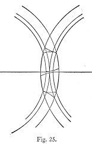
十年后，Gibbs 在 1873 年的热力学研究中，用内能、熵和体积构成曲面，以几何关系讨论平衡与稳定性。从早年的齿廓曲线到热力学曲面，可以看到几何方法在他研究中的重要地位。这篇早年的齿轮博士论文长期未刊，直到 1947 年才首次正式出版，距他获得学位已有 84 年。
1871 年受聘时，Gibbs 还没有发表数学物理方面的论文。他在耶鲁的教授职位最初九年没有薪水，生活由父亲留下的财产支持。1880 年，Johns Hopkins 大学提出年薪 3000 美元的聘请，耶鲁随后给出每年 2000 美元；他选择留在 New Haven。
在这九年中，他完成并发表了热力学曲面和非均匀物质平衡的代表性研究。
Gibbs 终身未婚。1869 年回国后，他继续住在 New Haven 的家庭旧居，与姐妹 Anna、Julia 以及 Julia 的家人共同生活。家产使他能够维持独立的生活，也支持了他最初九年没有薪水的教授生涯。
Gibbs 的重要论文发表于《康涅狄格科学院学报》。论文篇幅长，数学公式又多，排印成本很高。为让工作得以出版，耶鲁教授和 New Haven 的商人共同筹款；据美国物理联合会的历史介绍，资助者中很少有人、甚至可能没有人能读懂这些论文。
学院通过与其他学会交换学报传播论文，Gibbs 也主动寄出抽印本，并另发摘要。Maxwell 的阅读与介绍，进一步帮助同行理解这些抽象结果。
1873 年，Gibbs 用几何方法研究热力学，把固定物质量时的内能写成熵和体积的函数 U=U(S,V)。曲面不仅画出状态，还把温度与压强包含在斜率中：
Maxwell 读后，真的动手把这套几何关系做成立体模型：先用黏土塑形，再制成石膏模型，并把其中一件送给 Gibbs。这件模型至今仍保存在耶鲁大学物理系。他还在曲面上画出等温线和等压线；苏格兰国家博物馆的介绍记载，部分曲线是借助阳光掠过曲面时形成的轮廓描出来的。
一篇高度抽象的论文，就这样变成可以拿在手里、转过来观看的礼物。模型表现的是具有固、液、气相特征的理想化物质，而不是把水的全部实验数据原样做成立体图。
读图提示：几何图左上角用旧记号 v,\phi,e 表示体积、熵与内能；标为 T_i 和 P_i 的曲线分别是等温线和等压线。对照上面的偏导数公式：固定体积时，沿熵方向的曲面斜率给出温度；固定熵时，沿体积方向的斜率的负值给出压强。
1892 年 6 月 5 日，Rayleigh 写信给 Gibbs，建议他为《论非均匀物质的平衡》出新版，或以这篇论文为基础写一本专著，让读者更容易理解其中的思想。他认为原文：
“too condensed and too difficult for most, I might say all, readers.”
“对大多数读者——我甚至可以说，对所有读者——都过于凝练，也过于难懂。”
Gibbs 在 6 月 27 日的回信中，先回应了 Rayleigh 提出的光学问题，末尾谈到这篇论文时写道：
“I myself had come to the conclusion that the fault was that it was too long. I do not think that I had any sense of the value of time, of my own or others, when I wrote it.”
“我自己倒早已得出结论，认为它的毛病在于太长了。我想，写这篇论文时，我对时间的价值并没有什么意识，无论是自己的时间，还是别人的时间。”
这段往来反映了科学写作中的一个问题：文字简短，并不一定容易理解。Rayleigh 希望 Gibbs 多作一些解释；Gibbs 的回信则带有对自己写作方式的反省，提到了作者和读者双方付出的时间。这里讨论的是他的热力学长篇论文《论非均匀物质的平衡》。
《统计力学基本原理》的副标题是“特别论及热力学的合理基础”。书中先讨论一般力学体系的概率分布，最后一章再专门讨论分子体系中的同种粒子计数与粒子数变化。这样的安排让系综方法不必从某一种具体气体模型出发，也能建立与热力学的联系。
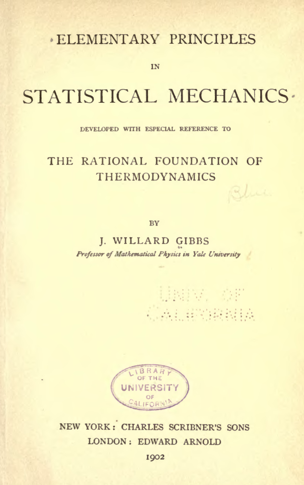
1903 年，Gibbs 在 New Haven 去世，安葬于当地的 Grove Street Cemetery。他的一生与耶鲁和这座城市紧密相连，系综方法却进入了远为广阔的研究领域，后来在量子统计、多体物理和计算统计物理中继续发展。
据 Yale Alumni Magazine（2017）转述，Einstein 曾称 Gibbs 为“the greatest mind in American history”（美国历史上最伟大的头脑）。